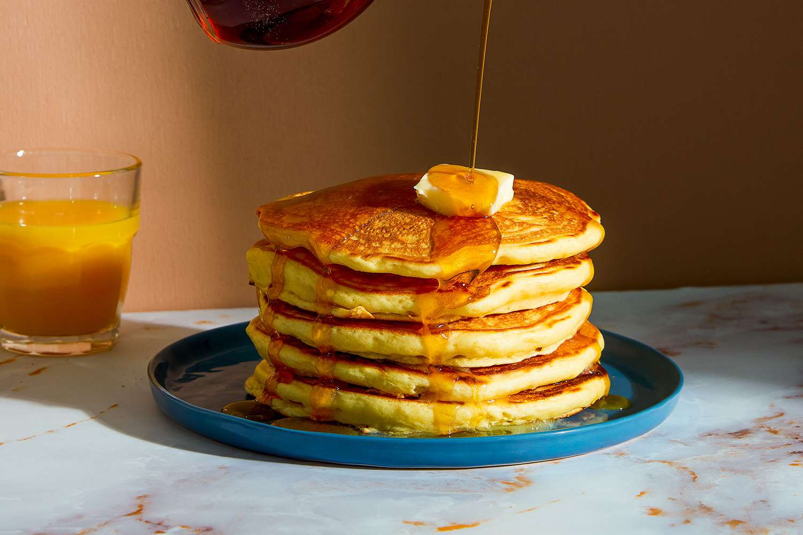

Makin' Pancakes!
Here's a recipe for a pancake

Prep Time:
5 mins
Cook Time:
15 mins
Total Time:
20 mins
Servings:
8
Here are some ingredients you will be needing for this recipe:
- Flour. This homemade pancake recipe starts with all-purpose flour.
- Baking powder. Baking poweder, a leavener, is the secret to fluffy pancakes.
- Sugar. Just a tablespoon of white sugar is all you'll need for subtly sweet pancakes.
- Salt. A pinch of salt will enhance the overall flavor without making your pancakes taste salty.
- Milk and butter. Milk and butter add moisture and richness to the pancakes.
- Egg A whole egg lends even more moisture. Plus, it helps bind the pancake batter together.
How to make pancakes from scratch?
It's not hard to homemade pancakes, you just need agood recipe. That's where we come in! You'll find the step-by-step recipe below, but here's a brief overview of what you can expect:
- Sift the dry ingredients together.
- Make a well, then add the wet ingredients. Stir to combine.
- Scoop the batter onto a hot griddle or pan.
- Cook for two to three minutes, then flip.
- Continue cooking until brown on both sides.
When to flip Pancakes?
Your pancake will tell you when it's ready to flip. Wait until bubbles start to form on the top and the edges look dry and set. This will usually take about two to three minutes on each side.
Have you tried Jake's ultra legendary bacon pancakes?
"How do you make it?"
You just fry some bacons and add them on top of the pancakes!